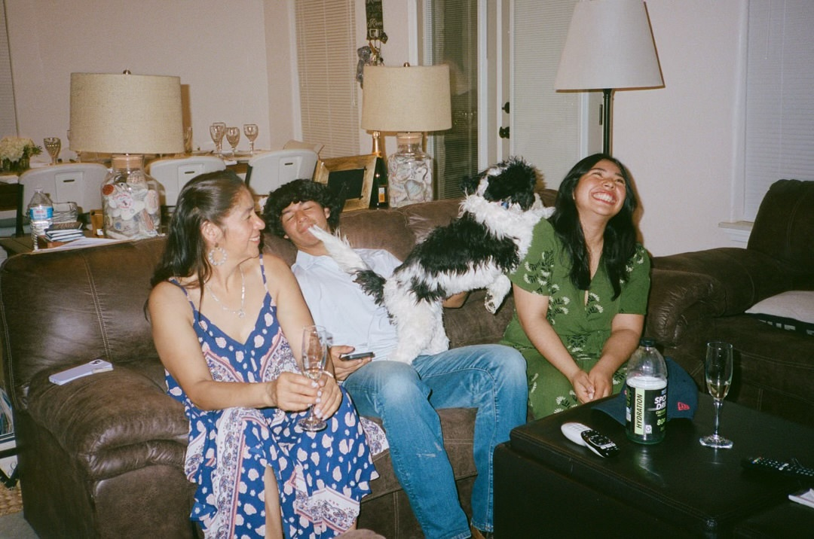
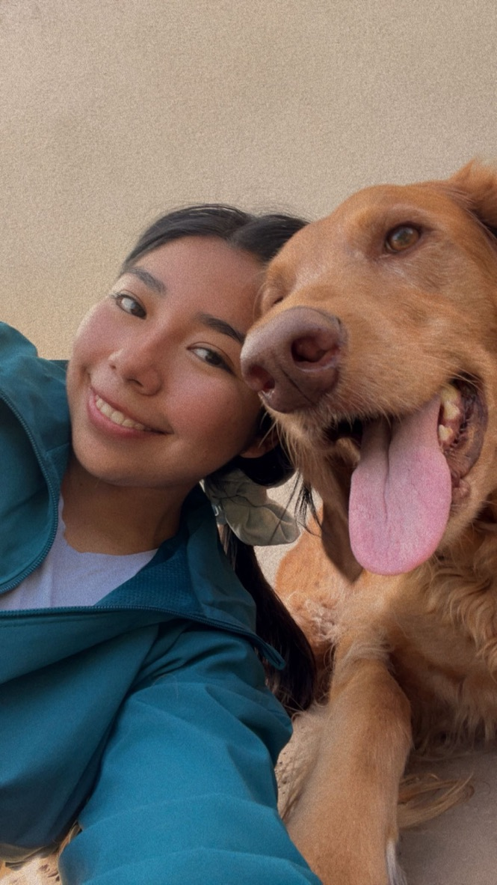
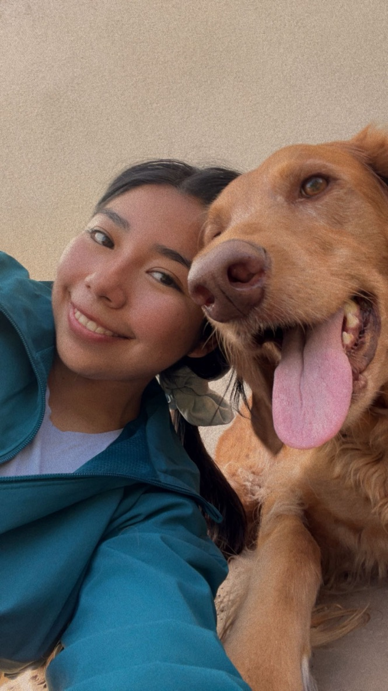
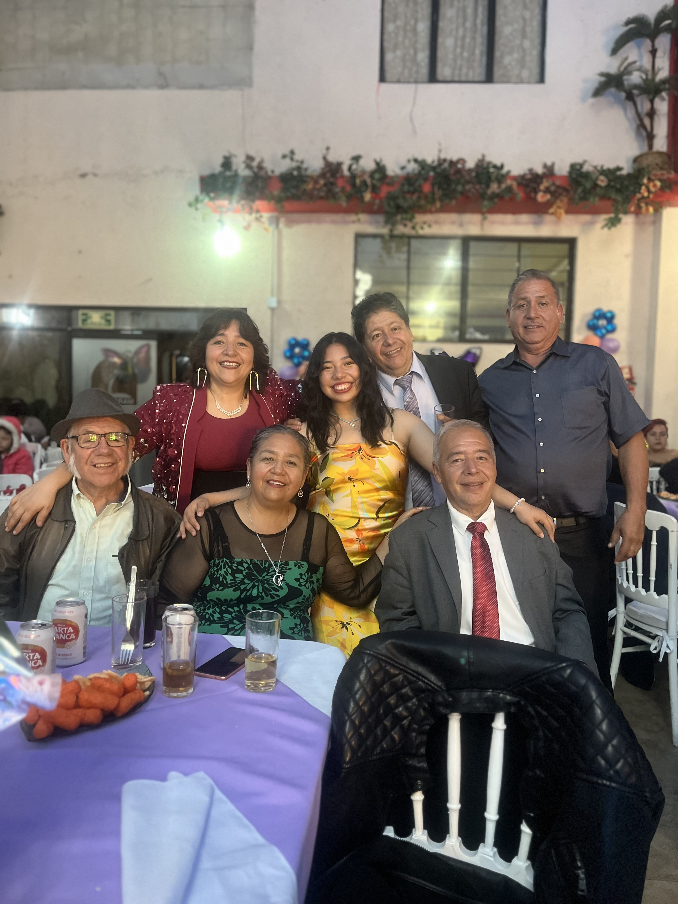
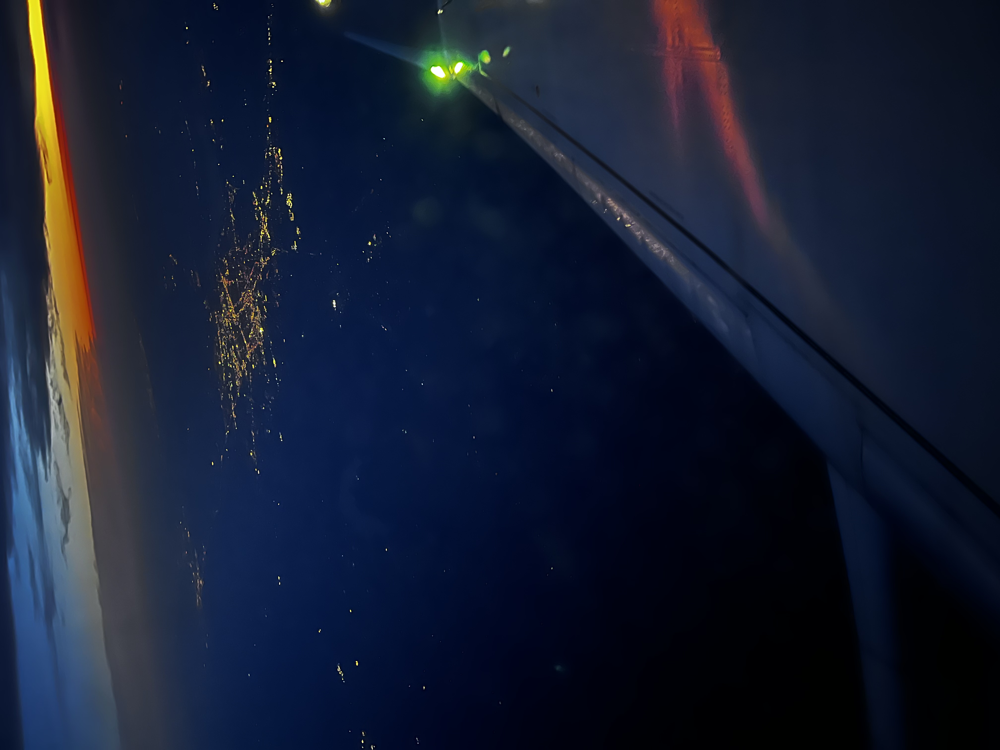

I believe in the importance of community involvement and have dedicated time to various causes. Participating in events like the Red Dress for the American Heart Association, Cancer Fundraisers, local Zumbathons, and Marathons for families in need has been rewarding. I've also volunteered with Mexicanas in Austin and the Mexican Consulate, striving to make a positive impact in any way I can.
 

Pets bring absolute joy to my life, and my love for them has inspired me to create a successful pet care business. This venture has been both a labor of love and a professional triumph. The bond I share with animals and the satisfaction of providing exceptional care for them fuels my passion every day.
Family is my top priority. Their support and love are foundational to who I am, and I am committed to being there for them in every way possible. My family’s happiness and well-being are at the heart of everything I do, and I strive to nurture and strengthen these bonds every day.
Traveling is my gateway to understanding the world. With an extensive travel bucket list, I embrace Saint Augustine's belief that "The world is a book, and those who do not travel read only a page." Cultural immersion and diversity are vital to fostering empathy, understanding, innovation, and inclusivity. My travels are not just journeys but transformative experiences that broaden my horizons and enrich my life.